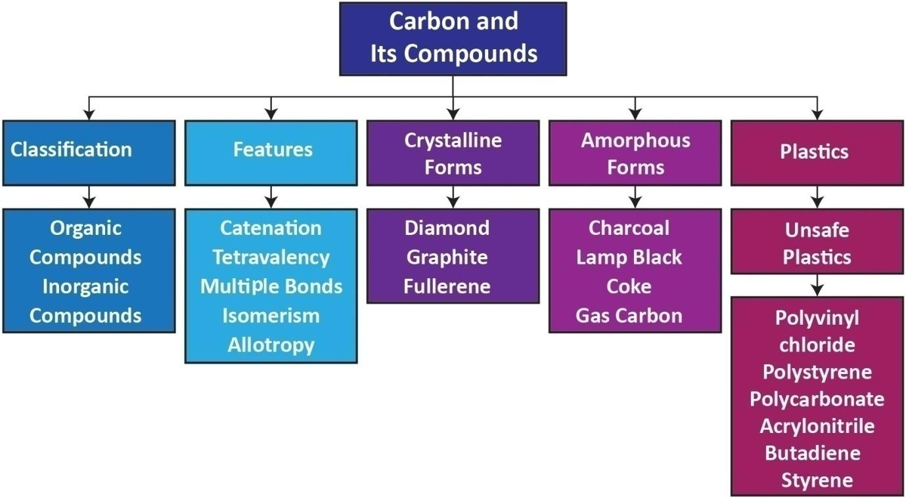

1. A phenomenon in which an element exists in different modification in same physical state is called
Bracket OPEN a bracket closed isomerism Bracket OPEN b bracket closed allotropy Bracket OPEN c bracket closed catenation Bracket OPEN d bracket closed crystallinity
2. Carbon forms large number of organic compounds due to
Bracket OPEN a bracket closed Allotropy Bracket OPEN b bracket closed Isomerism Bracket OPEN c bracket closed Tetravalency Bracket OPEN d bracket closed Catenation
3. Nandhini brings her lunch every day to school in a plastic container which has resin code number 5. The container is made of
Bracket OPEN a bracket closed Polystyrene Bracket OPEN b bracket closed PVC Bracket OPEN c bracket closed Polypropylene Bracket OPEN d bracket closed LDPE
4 Plastics made of Polycarbonate Bracket OPEN PC bracket closed and Acrylonitrile Butadiene Styrene Bracket OPEN ABS bracket closed are made of resin code dash
Bracket OPEN a bracket closed 2 Bracket OPEN b bracket closed 5 Bracket OPEN c bracket closed 6 Bracket OPEN d bracket closed 7
5 Graphene is one atom thick layer of carbon obtained from
Bracket OPEN a bracket closed diamond Bracket OPEN b bracket closed fullerene Bracket OPEN c bracket closed graphite Bracket OPEN d bracket closed gas carbon
6 The legal measures to prevent plastic pollution come under the dash Protection Act 1988.
Bracket OPEN a bracket closed Forest Bracket OPEN b bracket closed Wildlife Bracket OPEN c bracket closed Environment Bracket OPEN d bracket closed Human rights
1. dash named carbon.
2. Buckminster Fullerene contains dash carbon atoms .
3. Compounds with same molecular formula and different structural formula are known as dash
4 . dash is a suitable solvent for sulphur.
5 . There are dash plastic resin codes.
1. Alkyne - Bucky Ball
2. Andre Geim - Oxidation
3. C60 - Graphene
4. Thermocol - Triple bond
5. Combution - Polystyrene
1. Differentiate graphite and diamond
2. Write all possible isomers of C2H6O .
3. Carbon forms only covalent compounds. Why question mark
4. Define Allotrophy.
5. Why are one-time use and throwaway plastics harmful question mark
5. Answer in detail.
1. What is catenation question mark How does carbon form catenated compounds question mark
2. What are the chemical reactions of carbon question mark
3. Name the three safer resin codes of plastics and describe their features.
6. Higher Order Thinking Skills
1. Why do carbon exist mostly in combined state question mark
2. When a carbon fuel burns in less aerated room, it is dangerous to stay there. Why question mark
3. Explain how dioxins are formed question mark Which plastic type they are linked to and why they are harmful to humans question mark
4. Yugaa wants to buy a plastic water bottle. She goes to the shop and sees four different kinds of plastic bottles with resin codes 1, 3, 5 and 7. Which one should she buy question mark Why question mark
1. Modern Inorganic Chemistry by R.D Madan
2. Fundamentals of Organic Chemistry by B.S.Bahl et.al
3. Organic Chemistry by Paula Bruise, 6th Edition
http://www.chemicool.com/elements/carbon.html
https://en.wikipedia.org/wiki/Carbon
https://courses.lumenlearning.com/introchem/chapter/allotropes-of-carbon/
https://plastics.americanchemistry.com/Plastic-Resin-Codes-PDF/
https://www.youtube.com/watchquestion markv=8Obb982Sg84

ICT CORNER Carbon
Steps
Reach the given URL to download and install the “Avogadro” cross platform application in your computer.
Open the Avogadro application and select carbon from “Element” tab and select the available bond type “Single” or “Double” or “Triple”.
Place the mouse pointer on the black screen and click and drag the mouse to draw the carbon structure. Extend the bonding by dragging repeatedly. Build the structure of Ethane, Methane etc.
Select “Auto Rotation” from the tools and rotate the molecular structure by dragging the mouse on the bond. To view various properties of the drawn bonding go to menu View -> Properties.
Avogadro URL: https://avogadro.cc/ or Scan the QR Code.